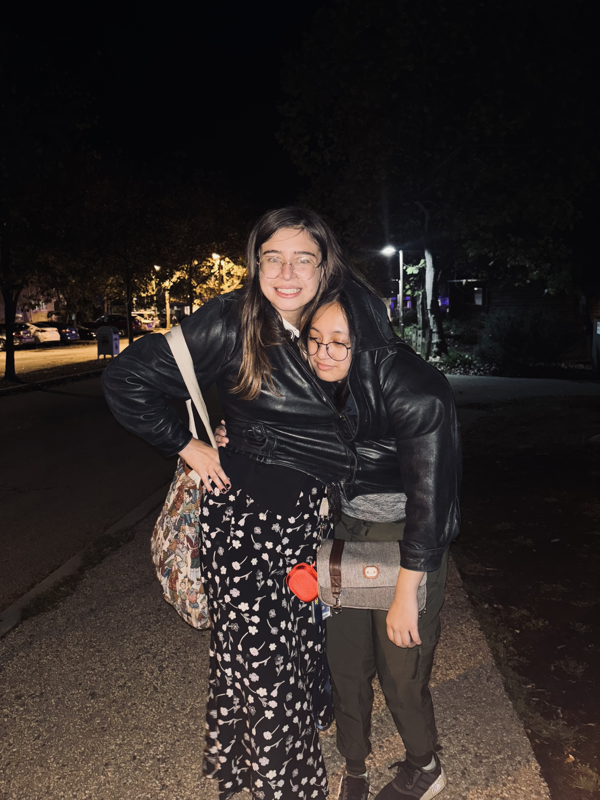

Hello World!
This is about us...

Hi my name is Franchesca, and I am typing as my partner, Ruby, is driving.
We are taking this class together and we are roommates.
We both have limited experience in coding and are both excited to take this class.
We are working on compiling a banana pile in our room, right now we have seven bananas.
We have employed outside help for our endeavor, AKA our friends.
Overall, the pile is satisfactory, but not to the ceiling.
There is never enough bananas to be had.